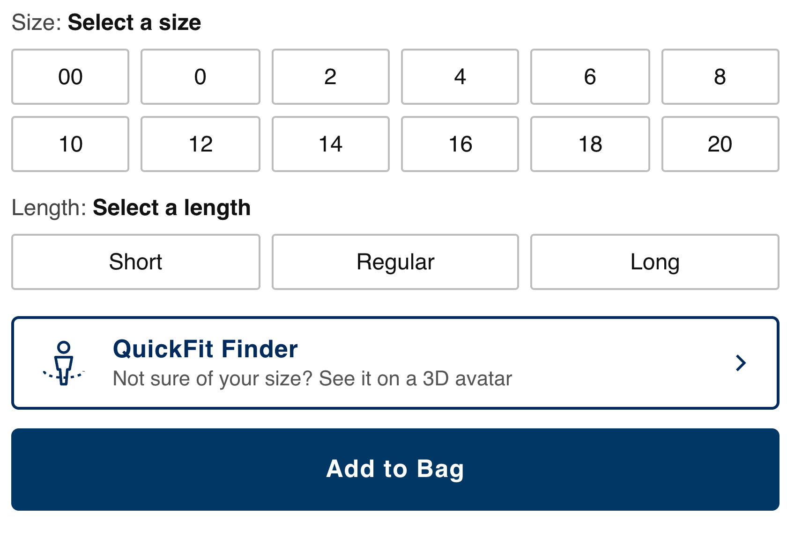
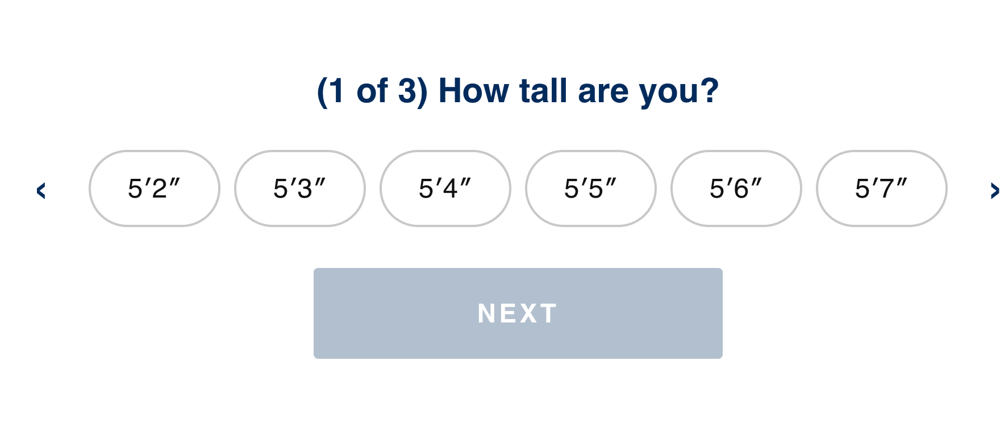
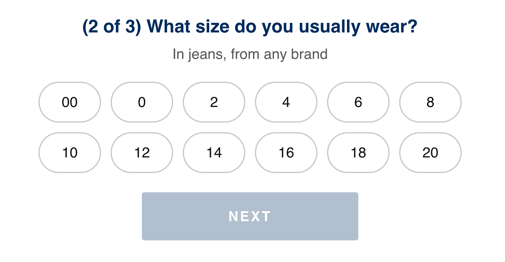
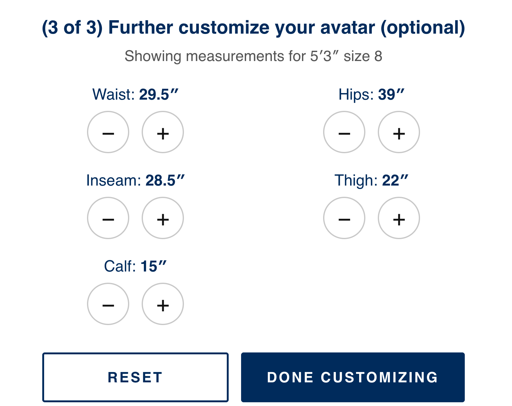
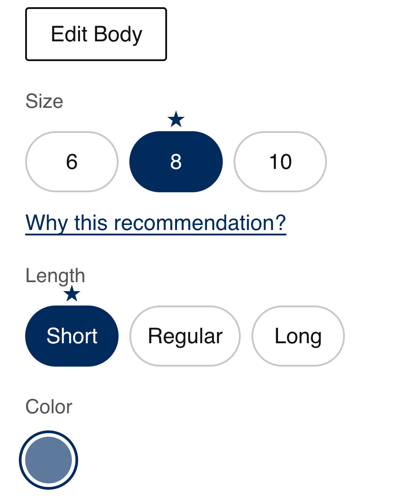
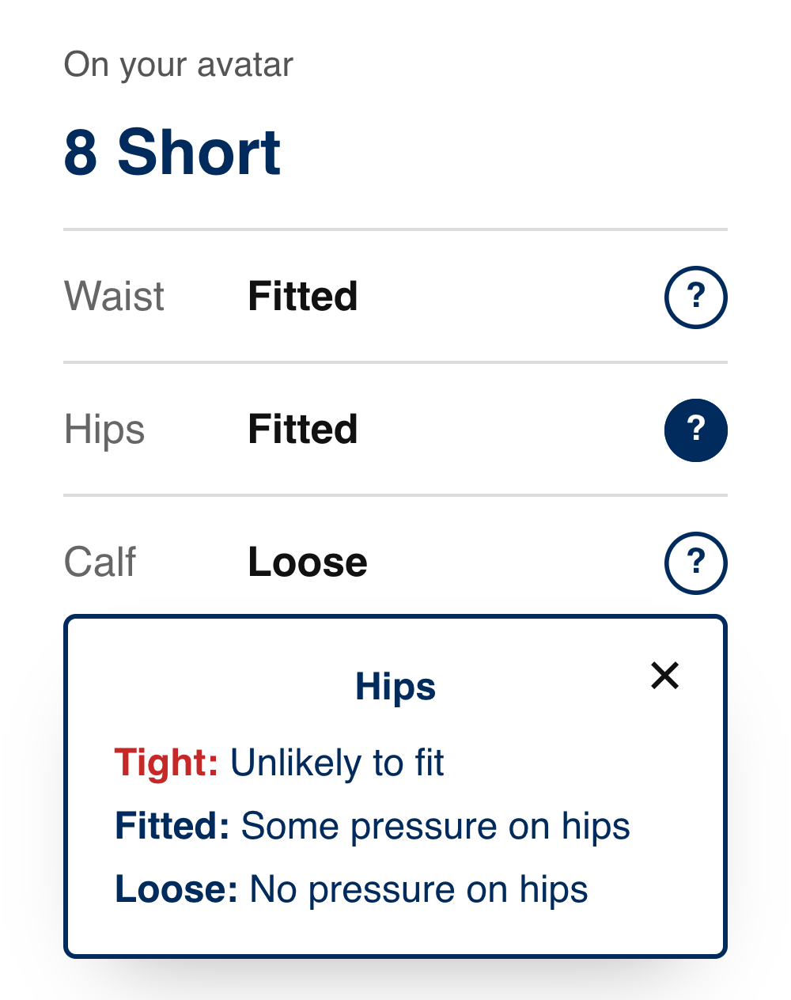

01

Entry where doubt peaksSits just above Add to Bag, where shoppers hesitate. It is optional, so anyone who knows their size never meets it.

Entry where doubt peaksSits just above Add to Bag, where shoppers hesitate. It is optional, so anyone who knows their size never meets it.

Ask one thing firstHeight is the only upfront question, and the avatar resizes the moment you pick one. Value shows up before effort does.

Start from a size they knowTheir usual size, from any brand, calibrates the body without a tape measure. Next stays off until there is an answer.

Keep the numbers visibleMeasurements stay in inches beside each control. People who knew a few of theirs trusted numbers over a visual guess.

Reasons on requestWhy this recommendation is one tap, never forced open. It says when the size is smaller or larger than usual.

Say what fit feels likeWaist, Hips and Calf each get a plain word, and the ? defines tight, fitted and loose.